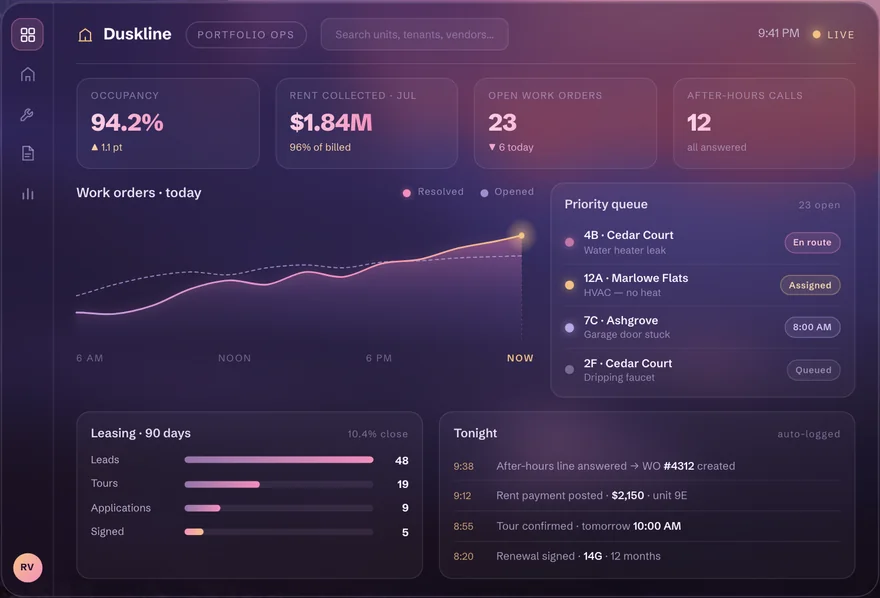
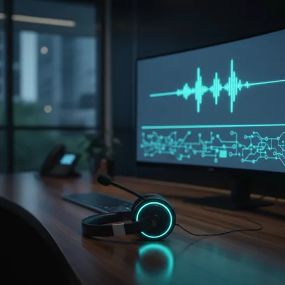
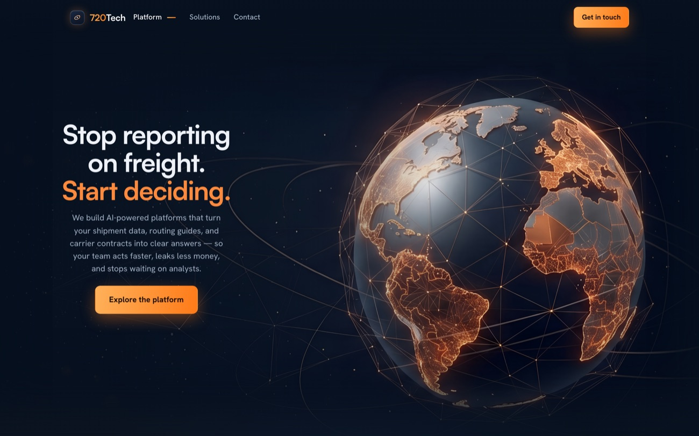
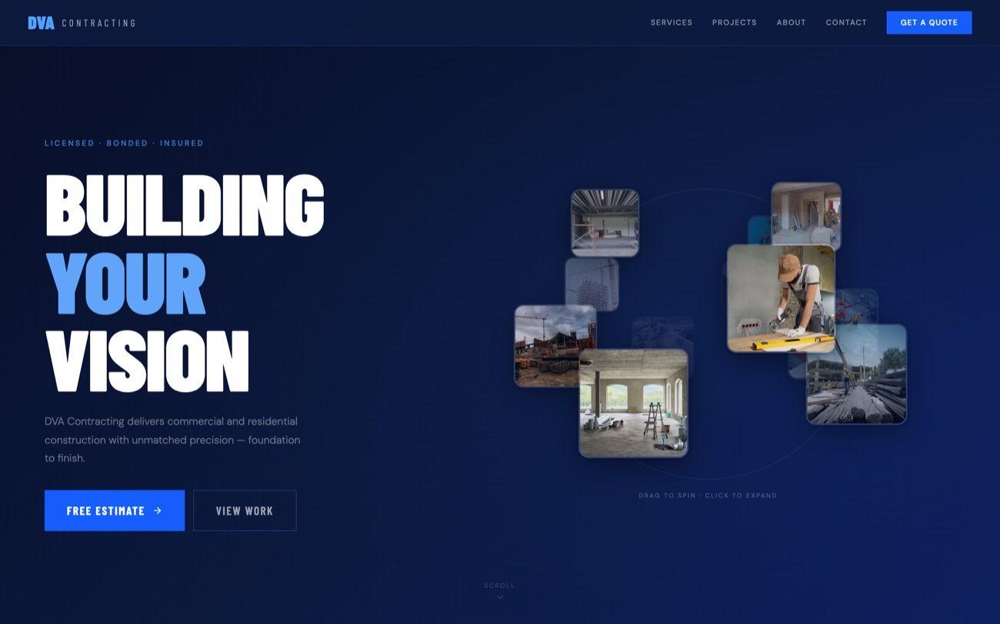
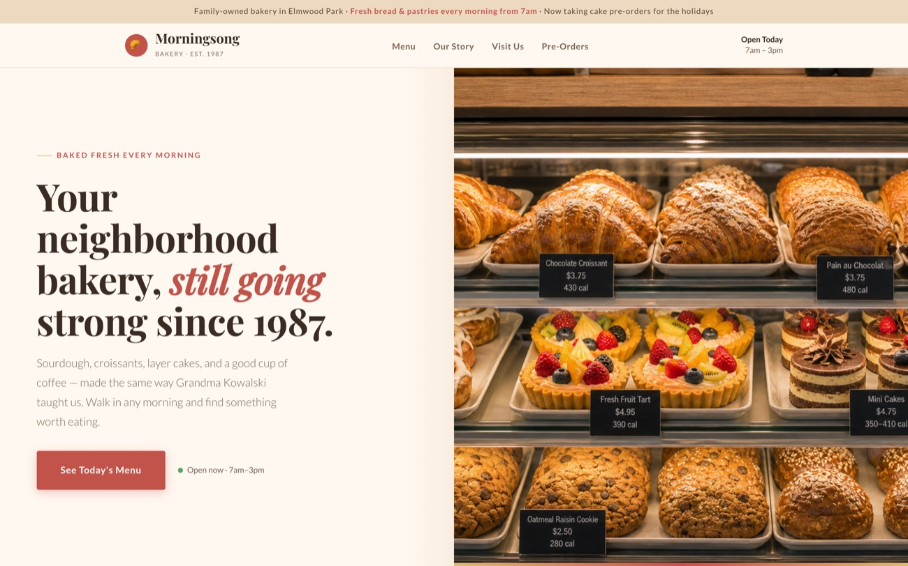

[ AI CONSULTING ]
AI that earns its keep.
We build automations, dashboards, and voice agents for mid-size businesses. Live in production inside the tools you already use, and supported long after launch.

Keep scrolling
[ WHAT WE BUILD ]
AI systems that
move the business.
Strategy, automation, dashboards, and voice agents, plus the infrastructure that keeps them running.

[ SELECTED WORK ]
Real builds, in the wild.
Three different industries, one standard: it has to work for the people using it.

Freight tech 720Tech Freight intelligence platform. Rate leakage and routing guides, explained in plain English. Live
Construction DVA Contracting A contractor's site built to win bids, with a project gallery visitors spin and expand. Shipped
Local business Morningsong Bakery Menu, hours, and pre-orders. Warm, quick, and runs without a developer on call. ShippedAnd the work you can't screenshot: the invoice automation that runs every week without a human touching it, and the agents behind our own operation. More on that below.
One team. End to end.
Strategy through implementation, then support once it's live.
[ APPROACH ]
Find. Build. Run.
No hundred-page strategy decks. One workflow at a time, proven in production before we widen scope.
-
01
Find A short audit of your operation. We map where AI pays off and tell you plainly where it doesn't.
-
02
Build The first workflow ships inside your existing tools in weeks. You see it working before anything scales.
-
03
Run We watch what ships, tune it, and train your team until it's boring. Boring means it works.
[ WHY US ]
Clear thinking.
No black boxes.
We build practical systems, explain them plainly, and keep the work grounded in real business use.
- Your data stays yours.
- Start with one workflow, prove the value, then scale.
- We train your team and support what ships.
# how it actually works pipeline: ingest → your systems decide → cited, reviewable act → inside your tools report → plain English # every step is yours to see owner: you data: stays put ✓
[ OPERATOR-LED ]
Run by an operator,
not a pitch deck.
AC Intelligence is led by the person who does the work. Before this practice, that meant automating the middle of a national freight operation: invoice imports that run every single week, status checks that used to eat whole afternoons, and dashboards that leadership actually opens.
That history shapes how we build. Everything has to survive contact with a real team, so we ship to production, stay on support, and explain every system in plain English. When AI is the wrong tool for your problem, you'll hear it from us before you spend.
- Anthropic & OpenAI APIs
- Microsoft Azure
- n8n · Make · custom code
- Your existing stack first
[ HONEST FIT ]
Who this is for.
A good fit if
- You run a mid-size business with repeatable back-office work that eats hours.
- You want one accountable team instead of a stack of vendors.
- You care whether it still works in month six, long after the demo.
Not a fit if
- You need a research lab or a custom foundation model.
- You expect AI to fix a process nobody on your team can explain.
- You're after a pilot to impress a board, not a system that runs.
[ QUESTIONS ]
Asked before every engagement.
Email consult@acintelligence.net and you'll hear back the same day.
Where does our data go?
It stays in your systems. We build inside your accounts and your tenant, and we don't train models on your data. Every system we ship can be audited by your team.
Do you ship to production, or just prototypes?
Production. The automations we build for ourselves run every week without a human touching them, and client work is held to the same bar: live, monitored, and supported after launch.
How long until something is live?
The first workflow typically ships in weeks, not months. The audit ends with a concrete scope and a date, so you know before you spend.
What tools do you build with?
Your existing stack first. Beyond that, we work with the Anthropic and OpenAI APIs, Microsoft Azure, workflow platforms like n8n and Make, and plain code when that's simpler and cheaper to run.
What does an engagement look like?
A 30-minute audit, then a fixed-scope first build, then optional ongoing support. You can stop after any stage and keep everything we built.
What if AI isn't the right answer for us?
Then we say so in the audit. Sometimes the fix is a script or a process change, and that costs far less. We'd rather lose a project than ship something that doesn't earn its keep.
[ GET STARTED ]
Start with
one workflow.
Bring the process that eats the most time. In a 30-minute audit we'll tell you whether AI can take it over, what it would cost, and what we'd build first. If it isn't a fit, you'll hear that too.
or email consult@acintelligence.net — you'll hear back within 24 hours